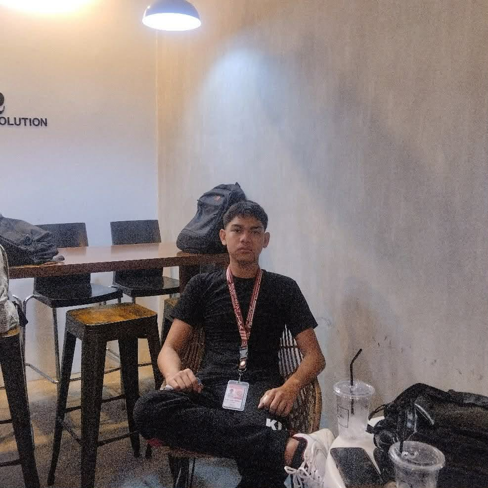
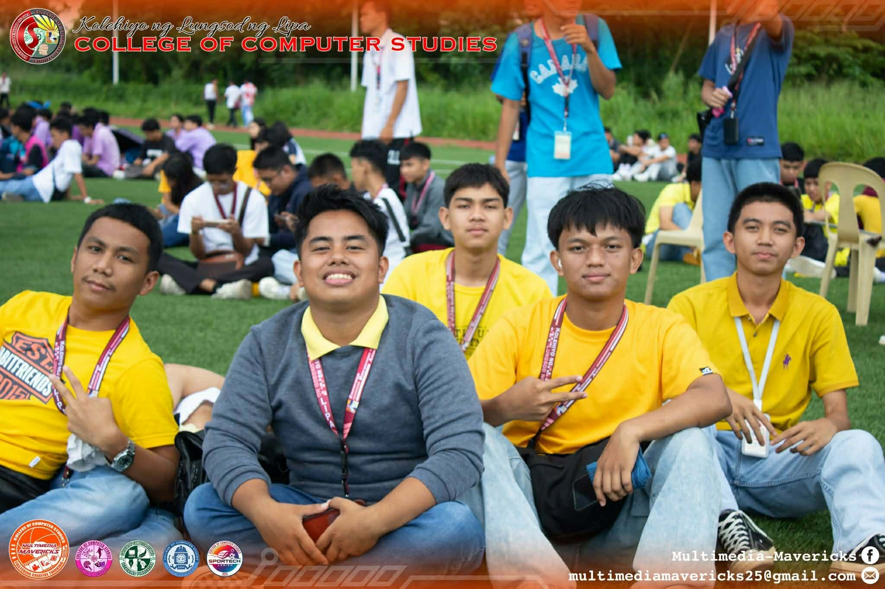
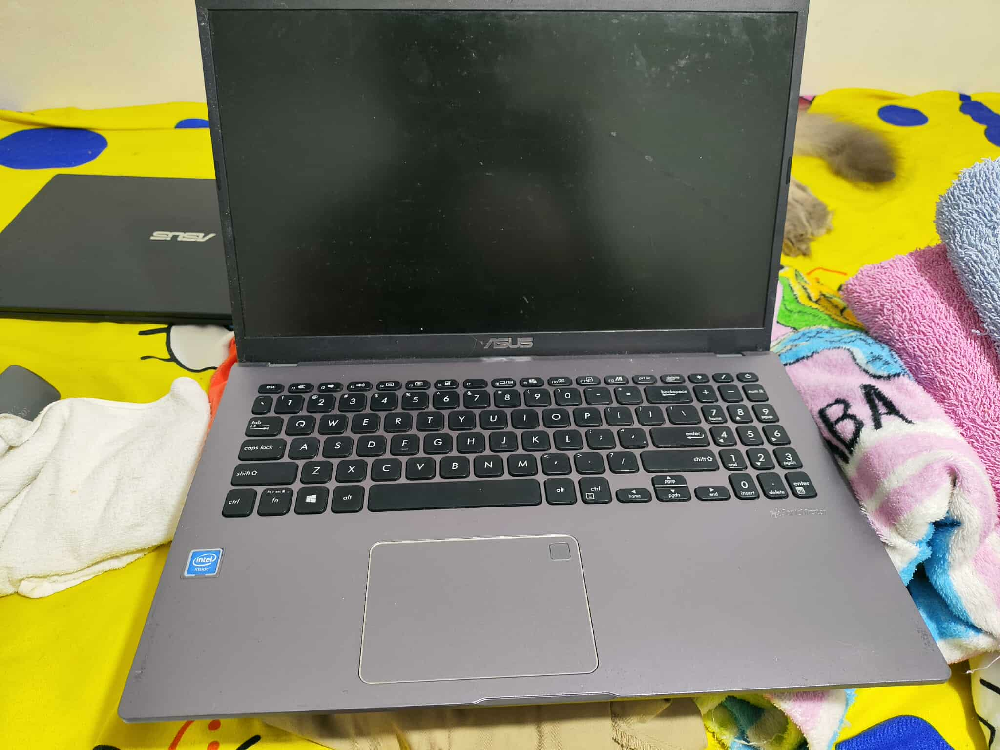

Age: 18 • BSCS 1-H • KOLEHIYO NG LUNGSOD NG LIPA
Hi! I’m Clark Stephen Ucol, a BSCS student who loves exploring technology, learning new skills, and sharing experiences. I enjoy collaborating with peers and making the most of every opportunity to grow academically and personally.

